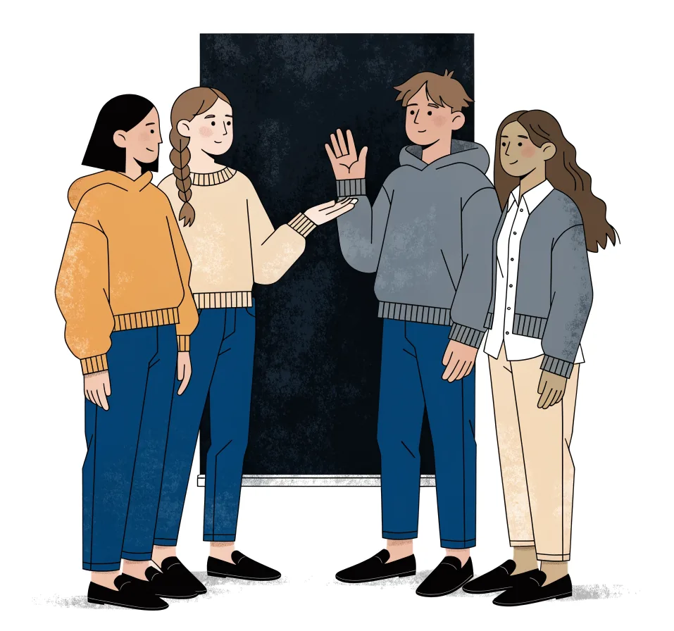
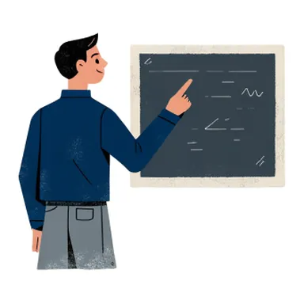
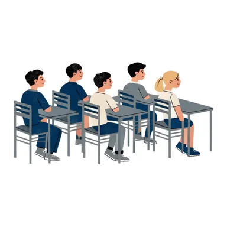
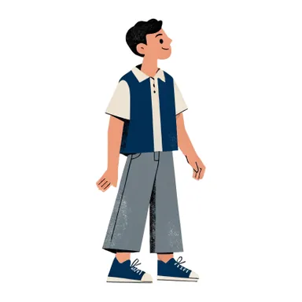
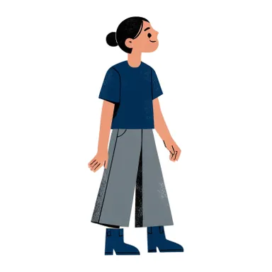

먼저 생각해 보세요.
Emma가 Das ist Lukas. Er ist dreizehn.이라고 말했어요. er는 누구를 가리킬까요?
남자를 다시 가리킬 때 er를 써요.

쉬는 시간이에요. Emma가 Yuna에게 반 친구들을 한 명씩 소개해요.
눌러서 들어 보세요.
먼저 생각해 보세요.
Emma가 Das ist Lukas. Er ist dreizehn.이라고 말했어요. er는 누구를 가리킬까요?
남자를 다시 가리킬 때 er를 써요.
Lektion 1의 낱말 다섯 개를 다시 떠올려 보세요.
문법 er, sie, Verben im Singular, Ja/Nein-Fragen
이 과를 마치면 내 친구 한 명을 독일어로 소개하는 글을 쓸 수 있어요.
쉬는 시간, 8b 교실이에요. Emma가 Yuna에게 친구들을 소개해요.
들으면서 찾아보세요. Lukas는 몇 살인가요?
저녁, Emma네 집이에요. Sabine가 Yuna에게 새 반이 어떤지 물어요.
들으면서 찾아보세요. Elif는 무엇을 연주하나요?
두 대화를 듣고 답하세요.
Yuna ist vierzehn.
Lukas ist vierzehn.
Lukas는 아직 열세 살(dreizehn)이에요.
Elif kommt aus Köln.
Lukas spielt Gitarre.
기타를 치는 사람은 Elif예요. Lukas는 축구를 해요.
Yuna는 지금 어디에 사나요?
Emma는 왜 Yuna의 휴대폰 번호를 물었나요?
낱말 21개예요. 낱말이나 예문 앞의 단추를 누르면 소리가 나요. 명사는 der, die, das를 색으로 구분했어요.
der Schüler, die Schüler 학생 (남자)
Lukas ist Schüler.Lukas는 학생이에요.
die Schülerin, die Schülerinnen 학생 (여자)
Yuna ist Schülerin.Yuna는 학생이에요.

der Lehrer, die Lehrer 선생님 (남자)
Herr Braun ist Lehrer.Herr Braun은 선생님이에요.
die Lehrerin, die Lehrerinnen 선생님 (여자)
Frau Schneider ist Lehrerin.Frau Schneider는 선생님이에요.
der Freund, die Freunde 친구 (남자)
Lukas ist ein Freund von Emma.Lukas는 Emma의 친구예요.
die Freundin, die Freundinnen 친구 (여자)
Elif ist meine Freundin.Elif는 내 친구예요.

die Klasse, die Klassen 반, 학급
Die Klasse ist sehr nett.반 친구들이 정말 좋아요.

der Junge, die Jungen 남자아이
Der Junge heißt Lukas.그 남자아이의 이름은 Lukas예요.

das Mädchen, die Mädchen 여자아이
Das Mädchen kommt aus Korea.그 여자아이는 한국에서 왔어요.
wohnen 살다
Ich wohne in Köln.나는 쾰른에 살아요.
lernen 배우다, 공부하다
Yuna lernt Deutsch.Yuna는 독일어를 배워요.
spielen 놀다, (운동이나 악기를) 하다
Elif spielt Gitarre.Elif는 기타를 쳐요.
alt 나이가 ~인, 오래된
Wie alt bist du?너는 몇 살이야?
das Jahr, die Jahre 해, 년, ~살
Ich bin vierzehn Jahre alt.나는 열네 살이에요.
wo 어디에
Wo wohnst du?너는 어디에 살아?
auch ~도
Ich bin auch vierzehn.나도 열네 살이야.
nett 친절한, 좋은
Frau Schneider ist sehr nett.Frau Schneider는 정말 친절해요.
lustig 재미있는, 웃기는
Lukas ist lustig.Lukas는 재미있어요.
neu 새로운
Yuna ist neu in der Klasse.Yuna는 반에 새로 왔어요.
jetzt 지금
Ich wohne jetzt in Köln.나는 지금 쾰른에 살아요.
die Handynummer, die Handynummern 휴대폰 번호
Wie ist deine Handynummer?휴대폰 번호가 뭐야?
이 과의 낱말로 여덟 문제를 풀어요.
줄을 누르면 소리가 나요. 13부터 19까지는 3부터 9에 -zehn을 붙여요. 다만 sechzehn과 siebzehn은 철자가 조금 짧아져요.
예문을 보고 답해 보세요.
Elif를 다시 가리킬 때 쓴 말은 무엇인가요?
규칙
앞에서 말한 사람을 다시 가리킬 때 남자는 er, 여자는 sie를 써요. 이름을 되풀이하지 않아도 돼요.
| 뜻 | 예 | |
|---|---|---|
| ich | 나 | Ich bin Yuna. |
| du | 너 | Du bist Lukas. |
| er | 그 (남자) | Er ist dreizehn. |
| sie | 그녀 (여자) | Sie ist vierzehn. |
주의 여기서 배운 sie는 소문자로 써요. 대문자로 쓰는 Sie는 어른에게 쓰는 높임말이에요.
예문을 보고 답해 보세요.
er나 sie가 주어일 때 동사는 어떻게 끝나나요?
규칙
er와 sie에는 -t를 붙여요. ich는 -e, du는 -st, er와 sie는 -t예요.
| wohnen | spielen | heißen | sein | |
|---|---|---|---|---|
| ich | wohne | spiele | heiße | bin |
| du | wohnst | spielst | heißt | bist |
| er, sie | wohnt | spielt | heißt | ist |
주의 sein은 er ist, sie ist예요. heißen은 du heißt와 er heißt의 모양이 같아요.
예문을 보고 답해 보세요.
네, 아니요로 답하는 질문은 무엇으로 시작하나요?
규칙
의문사가 없는 질문은 동사가 맨 앞에 오고, 주어가 그 뒤에 와요. 문장 끝을 올려서 말해요.
| 1 동사 | 2 주어 | 나머지 |
|---|---|---|
| Wohnst | du | in Köln? |
| Kommt | sie | aus Köln? |
| Ist | Frau Schneider | nett? |
주의 한국어는 문장 끝만 바꾸면 질문이 되지만, 독일어는 동사와 주어의 자리를 바꿔요. Du wohnst in Köln. → Wohnst du in Köln?
숫자를 듣고 알맞은 것을 고르세요.
Lukas는 몇 살인가요?
Ich bin dreizehn.
Tim은 몇 살인가요?
Tim ist zwölf.
어떤 숫자인가요?
siebzehn
Emma가 말한 번호는 무엇인가요?
Meine Handynummer ist null, eins, fünf, zwei, drei, acht.
친구 소개 카드를 읽고, 맞으면 richtig, 틀리면 falsch를 고르세요. Alter는 나이, Wohnort는 사는 곳이에요.
Steckbrief
Mats ist vierzehn Jahre alt.
Er wohnt in Köln.
Mats는 본(Bonn)에 살아요.
Er kommt aus Deutschland.
Er spielt Fußball.
Mats의 취미는 농구(Basketball)예요.
알맞은 동사 형태를 고르세요.
Lukas Fußball.
du in Köln?
Elif aus Köln.
Ich Deutsch.
Frau Schneider Lehrerin.
Wie alt du?
er와 sie 가운데 알맞은 말을 고르세요.
Das ist Lukas. ist dreizehn.
Das ist Elif. spielt Gitarre.
Das ist Frau Schneider. ist Lehrerin.
Das ist Herr Wagner. wohnt in Köln.
낱말을 순서대로 눌러 질문을 만드세요.
너는 쾰른에 살아?
Elif는 쾰른 출신이야?
Lukas는 열세 살이야?
너는 축구를 해?
계산한 답을 독일어 숫자로 쓰세요.
drei + vier =
zehn + zwei =
acht + acht =
zwanzig – eins =
숫자와 낱말을 짝지으세요.
듣고 그대로 써 보세요.
Ich bin vierzehn Jahre alt. 나는 열네 살이야.
Wo wohnst du? 너는 어디에 살아?
Sie kommt aus Köln. 그녀는 쾰른 출신이야.
Das ist … 이 사람은 …예요.
Er kommt aus … / Sie kommt aus … 그는 / 그녀는 …에서 왔어요.
Er wohnt in … / Sie wohnt in … 그는 / 그녀는 …에 살아요.
Wie alt bist du? 몇 살이야?
Ich bin … Jahre alt. 나는 …살이야.
Wo wohnst du? 어디에 살아?
Ich wohne in … 나는 …에 살아.
Wie ist deine Handynummer? 휴대폰 번호가 뭐야?
Meine Handynummer ist … 내 번호는 …야.
대화 A에서 역할을 하나 고르세요. 상대의 말은 음성으로 나오고, 내 차례에는 직접 말해요.
친구 한 명을 떠올리고 칸을 채우세요. 남자면 Er, 여자면 Sie를 쓰고, 나이는 독일어 숫자로 적어요. 완성된 문장을 소리 내어 읽어 보세요.
Das ist Minji.
Sie ist vierzehn Jahre alt.
Sie wohnt in Seoul.
Mein Freund, meine Freundin
친구 한 명을 소개하는 글을 써 보세요. 네다섯 문장이면 충분해요.
Das ist Minji. Sie ist meine Freundin. Sie ist vierzehn Jahre alt. Sie wohnt in Seoul. Sie spielt Gitarre.
다 쓴 뒤에 확인해 보세요.
Ich kann andere Personen vorstellen.다른 사람을 소개할 수 있어요.
Ich kann nach Alter und Wohnort fragen.나이와 사는 곳을 묻고 답할 수 있어요.
Ich kann die Zahlen von 0 bis 20 sagen.0부터 20까지 숫자를 말할 수 있어요.